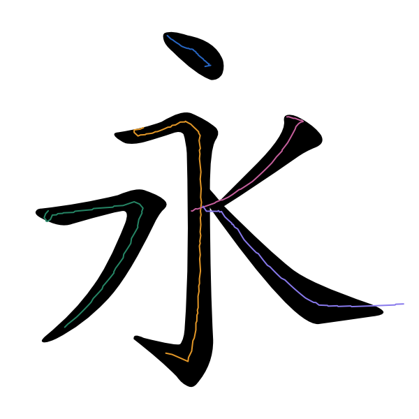

黑色为同一张字体布局参考，彩线为各笔实际生成的 XY。两版采用相同的五个笔画模板，修正通过逐笔几何参数适配完成。

| 笔画 | 修正前 | 修正后 |
|---|---|---|
| 1. dian | 0.00% | 0.00% |
| 2. hengzhegou | 0.00% | 0.00% |
| 3. hengpie | 0.00% | 0.00% |
| 4. pie | 0.00% | 0.00% |
| 5. na | 11.15% | 0.00% |
按原图坐标、1 px 容差、弧长均匀采样检查，并核对全部路径顶点。另用字体先验的每笔独立轮廓复核，五笔均未检测到轮廓外行程或顶点。路径是运笔 XY，轮廓贴合不等于墨迹外形仿真，也不表示真实书写已验证。